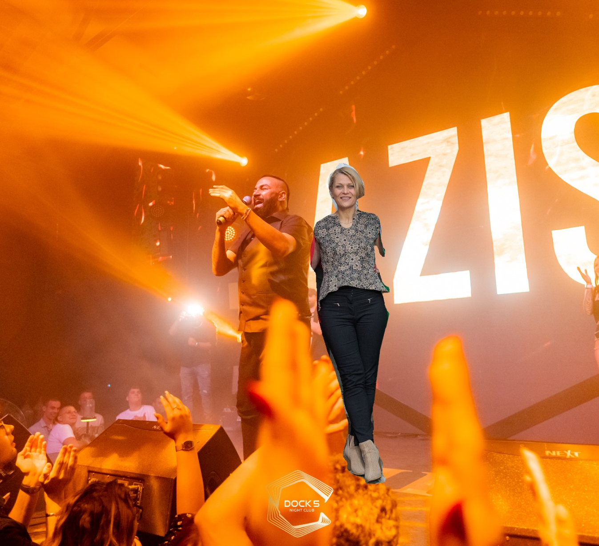
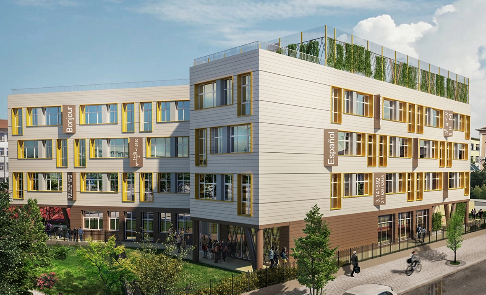

Народно Величие
Журналистически състав
Георги “Тошев” Събев
Димитър “Диванов” Киндалов
Георги “Брадатия” Парнарев
Тони “Дарк” Пеев
Снимка с човека, който стои зад всичко:
14

СКАНДАЛНО!
Народно Величие
Учителката Весела Вангелова разтърси подиума на DOCK5 с
неочакваните си танцови умения!

На последното училищно парти в клуб "Dock5",
учителката по информатика, г-жа Весела Вангелова,
изненада учениците си със своите невероятни
танцьорски умения. Веселата и душевна
преподавателка се превърна в истинска
сензация на танцовата площадка, като
неочаквано се присъедини към музикалното
шоу на популярния изпълнител Азис.
"Бяхме наистина изненадани, когато видяхме
г-жа Вангелова да излиза на сцената. Но тя беше невероятна! Точно когато песента на
Азис
стартира, тя показа невиждани досега таланти за танци", споделя един от
учениците.
Учениците бяха въодушевени от енергията и щастието на г-жа Вангелова, която се
забавляваше
заедно с тях, създавайки незабравимо преживяване за всички присъстващи.
"Беше невероятно да видим нашата учителка да се забавлява толкова
много
и
да покаже толкова
голямо умение за танцуване. Това ни направи щастливи и беше страхотен начин да се
насладим
на
вечерта", каза друг ученик.
И така, дори извън класните стаи, г-жа Весела Вангелова успя да вдъхнови своите ученици
и да
им
покаже, че най-важното в живота е да се забавляваш и да показваш своите страсти.
2
ВЪРХОВНО!
Народно Величие
Ученикът Георги Събев избухна с 4 убийства за един рунд на Counter Strike в час по изкуствен
интелект!
В последната сесия по изкуствен интелект, ученикът Георги Георгиев Събев представи вълнуващо
представяне в света на Counter-Strike 2 (CS 2), като постигна удивителен клъч, убивайки 4ма
врага в един рунд. Това постижение не само демонстрира неговата игрова умелост, но и
изразява вниманието към използването на изкуствен интелект в игрите.
"Беше фантастично изживяване да съчетая знанията си по изкуствен
интелект със
стратегическите умения в CS 2", сподели Събев след рунда. "Реализацията на този клъч беше
поредният пример за това, какво можем да постигнем, когато комбинираме технологията със
стратегическото мислене."
Учителят по изкуствен интелект, г-н Александър Иванов, беше изключително впечатлен от
постижението на Събев и го поздрави горещо за изключителната му игрова изява. "Това, което
Георги постигна, е вълнуващо и впечатляващо", сподели учителят. "Разбира се, че уменията в
изкуствения интелект му помогнаха да осъществи този впечатляващ клъч."
И така, едно изключително представяне на ученик в света на CS 2 подчерта връзката между
технологията и стратегическото мислене, като дава нов поглед върху възможностите за
употребата на изкуствения интелект във видеоигрите.
3
КРИМИНАЛНО!
Народно Величие
Учителят по география, Велимир Иванов, спечели милиони от прогнозата си за времето и се отправя на
сафари в Африка!
Невероятният смелост и ум на учителя по география, Велимир Иванов, се отразиха
не само в класната стая, но и в света на залозите. С изключителност и точност, г-н Иванов
постави залог на прогнозата за времето в Betano, като заложи необичайно голяма сума от 100
000лв и успешно спечели 1 000 000лв!
"Моят интерес към географията ме научи да анализирам и да разбирам важните фактори, които
влияят на времето. Това ми помогна да направя смела прогноза и да поставя залог, който се
оказа успешен," сподели учителят.
С получените средства от залога си, г-н Иванов реши да се отправи на невероятно приключение
и се подготвя да посети Африка за сафари приключение. "Това е изключително вълнуващо и ми
дава възможност да разширя знанията си за географията, изследвайки разнообразието на
природата и животинския свят на континента," добави той.
Учениците на г-н Иванов изразиха своето възхищение и радост за успеха на техния учител и му
пожелаха безпроблемно и вълнуващо пътешествие.
4
ЗАЩИТНО!
Народно Величие
Ники Портата, пазачът на училище ППМГ "Академик Никола Обрешков", на работа с новия си Land Rover
Defender
В училище ППМГ "Академик Никола Обрешков" се появи пазачът Ники Портата със своят нов
автомобил Land Rover Defender. Той е впечатляващ с несравнимия си стил и представя нова
визия за сигурността и охраната в учебното заведение.
"Това е последната придобивка към моето служебно оборудване. Децата имат право на сигурност
и уют в училище," каза Портата.
С новия си автомобил, Портата показва ангажимента си към безопасността на училището и на
учениците. Неговoто присъствие е ободряващо и успокоително, като предоставя необходимата
сигурност и защита на образователната среда.
"Нашата гимназия се стреми да предостави комфортна и сигурна среда за всички ученици. Ние
сме отворени към всички, които споделят нашите ценности," добави Портата.
Този нов ресурс в училището отразява постоянната грижа за безопасността и доброто на
учениците, създавайки усещане за защита и уют в средата за обучение.
5
ВПЕЧАТЛЯВАЩО!
Народно Величие
Бронзов медал за Ангел Христов от най – престижната математическа проява в световен мащаб!
От 2 до 13 юли 2023 г. в гр. Чиба, Япония, се проведе 64-тата международна олимпиада по
математика – най-престижното състезание за математици от висок ранг. В нея взеха участие над
600 ученици от 112 държави. Най-добрите от най-добрите! Българският национален отбор спечели
пълен комплект медали – 1 златен, 1 сребърен и 4 бронзови.
Възпитаникът на нашата гимназия Ангел Христов от 10 клас е бронзов медалист.
Браво на нашето момче, поздравления за неговия преподавател г-жа Ганка Вътева! Гордеем се,
че e част от този тим, който представи достойно България!
Пожелаваме му още много успехи и най-вече щастливо и безгрижно лято!
6
МВЪЙ!
Народно Величие
Златен медал за Георги Костадинов!
4 от 4! Българските ученици по физика направиха блестящо представяне на Балканската
олимпиада по физика и заслужено спечелиха 4 медала. Родните гимназисти завоюваха 2 златни и
2 сребърни отличия в конкуренция с 56 състезатели от 9 балкански и 5 гостуващи държави.
Надпреварата се проведе онлайн от 7 до 9 октомври с виртуален домакин Кипър.
Златните медали спечелиха Маргулан Исмолдаев (МГ Варна) и Георги Костадинов (ППМГ Бургас).
Сребърните отличия са за Румен Димитров (СМГ) и Гео Калфов (ПЧМГ). Техен ръководител на
олимпиадата бе Мая Жекова (Физически факултет на СУ).
Поздравления, Георги! За теб и твоите учители!
Поздравления за Мариана Анастасова – старши учител по физика в ППМГ „Акад. Никола Обрешков“!
Гордеем се с Вас!
7
БРАВОО!
Народно Величие
Мататон разбива конкурецията в първото издание на състезанието Datathon!
Отбор „Мататон“ от ППМГ „Акад. Никола Обрешков“ – Бургас, е победителят в първия Дейтатон,
организиран от Националния статистически институт, в който участваха 27 ученически отбора от
средните училища в страната. Представителите на отбора са Крис Арабаджиев, Георги Събев и
Никола Ганчев, ученици от XI Д клас и техният учител и ментор Нина Илиева.
До финалния етап, който се проведе от 19 до 21 юни в к.к. Боровец, достигнаха 14 отбора. Те
трябваше да работят върху темата „Влиянието на номофобията (страха да останем без телефон)
върху здравословното състояние на населението в България“, която беше обявена едва в
началото на срещата. Предизвикателството беше в рамките на 48 часа да подготвят разработки,
анализирайки в избрана от тях възрастова група, номофобията като развиващ се във времето
процес на зависимост, както и условията за нейното възникване и развитие.
Журито с председател доц. Михаил Кончев, заместник-председател на НСИ, даде свобода на
отборите и техните ментори освен да използват официалните данни на Евростат, НСИ и ООН, да
правят и собствени проучвания и анализи. Критериите за оценка бяха: аналитичност,
креативност, интерпретация на данните, способност за ориентиране и вземане на бързи решения,
работа в екип, начин на презентация, както и ролята на ментора в процеса на работа.
Участниците в Дейтатона ще имат възможност да преработят презентациите си в статии, които да
бъдат публикувани в списание „Статистика“ в рубриката „Статистика за всеки“.
Нашият отбор бе поканен да участва на Европейската олимпиада по статистика през есента.
Поздравления за нашите прекрасни момчета и техния ментор г-жа Нина Илиева.
8
ПОБЕДНО!
Народно Величие
Триумфът на Гимназия 'Академик Никола Обрешков': футболният отбор триумфира след победа на финала!

Честити първенци на гр. Бургас! След доста оспорван мач и изоставане в резултата до края на
първото полувреме с 0:1, нашите момчетата се мобилизираха и обърнаха резултата за
окончателната победа с 2:1 срещу отбора на ПГСАГ! Браво, момчета! Добър старт за нашия нов
колега по ФВС - Цветан Делчев! Още много победи да има!Честити първенци на гр. Бургас! След
доста оспорван мач и изоставане в резултата до края на първото полувреме с 0:1, нашите
момчетата се мобилизираха и обърнаха резултата за окончателната победа с 2:1 срещу отбора на
ПГСАГ! Браво, момчета! Добър старт за нашия нов колега по ФВС - Цветан Делчев! Още много
победи да има!
9
Народно Величие
Проект по Еразъм в Севиля!
ППМГ „Акад. Никола Обрешков“, Бургас като партньор на МГ „Акад. Кирил Попов“, Пловдив –
координатор на консорциум в Акредитация по Еразъм+ в сектор „Училищно образование“, се
включи в обучителна програма за ученици и учители, осигурена от Euromind в град Севиля по
В обучението участваха две групи по 10 ученици от IX и XI клас.
Първата група се включи в мобилността в периода 3-11 юли, а втората в периода 18-26 юли. В
обучения за учители участват четирима педагогически специалисти от гимназията, един в
периода 18-26 юли, трима в периода 3-11 август.
Учениците и учителите изразиха своето задоволство от обучението и възможността да се потопят
в атмосферата на невероятно красивата Севиля.
10
Народно Величие
Заглавие

В проекта "Визуални средства за улесняване на ученето/преподаването" участваха училища от
различни европейски страни, включително България, представяна от ППМГ, Бургас. Учениците
създадоха видео материали по различни предмети, улеснявайки обучението в различни области.
Проектът претърпя изменения поради Ковид епидемията, с онлайн работа и отменени мобилности.
Живите срещи започнаха в България и включваха образователни пътувания. Втората мобилност се
състоя в Швеция и Франция, като уменията за работа в екип се засилваха. След това последваха
посещения в Гърция и Словакия, където участниците продължиха обмяната на знания и опит.
Обобщено, българските участници създадоха над 50 видео продукта през проекта.
11
Народно Величие
Модерен и функционален: Ето как ще изглежда новият корпус на Математическата гимназия в Бургас!

Близо година измина, откакто кметът на Бургас Димитър Николов обяви идеята за
изграждане на нов корпус на елитната Математическа гимназия, където се водят и часовете на
ПГРЕ „Г.С.Раковски“.
Сега тази концепция е една крачка по-близо до реализацията, а от архитектурното студио,
което е
поело изработката на проекта преди дни показаха как ще изглежда корпусът. От „Кабано“
публикуваха няколко триизмерни визуализации, които са меко казано впечатляващи и отразяват
по
добър начин идентичността на новата сграда, чието изграждане предстои.
“Трябваше да съобразим проекта с изключително много фактори. На първо място държахме да запазим абсолютно всички дървета в двора. На второ – сградата трябваше да се впише и допълни съществуващите две – емблематичната сграда на училището и по-новата на спортната площадка. На трето, разбира се, идваха хилядите страници норми и наредби, свързани с училищни помещения. И на последно, но не по важност – всички изисквания за достъпна среда, които спазихме и даже надградихме”, коментират от архитектурното студио. Всъщност целта зад изграждането на новия учебен корпус е да се осигури едносменен режим на обучение, което от своя страна, ще повиши възможностите за избор на занимания по интереси в двете гимназии. В Математическата се обучават над 1020 ученици, разпределени в 39 паралелки. 907 пък са учениците, разпределени в 35 паралелки, в Гимназията за романски езици „Г. С. Раковски". Пренаселено е и затова корпусът е нужен, за да не се наложи намаляване на приема в тези училища заради недостатъчно класни стаи, коментираха в началото на годината общински съветници и преподаватели.
“Трябваше да съобразим проекта с изключително много фактори. На първо място държахме да запазим абсолютно всички дървета в двора. На второ – сградата трябваше да се впише и допълни съществуващите две – емблематичната сграда на училището и по-новата на спортната площадка. На трето, разбира се, идваха хилядите страници норми и наредби, свързани с училищни помещения. И на последно, но не по важност – всички изисквания за достъпна среда, които спазихме и даже надградихме”, коментират от архитектурното студио. Всъщност целта зад изграждането на новия учебен корпус е да се осигури едносменен режим на обучение, което от своя страна, ще повиши възможностите за избор на занимания по интереси в двете гимназии. В Математическата се обучават над 1020 ученици, разпределени в 39 паралелки. 907 пък са учениците, разпределени в 35 паралелки, в Гимназията за романски езици „Г. С. Раковски". Пренаселено е и затова корпусът е нужен, за да не се наложи намаляване на приема в тези училища заради недостатъчно класни стаи, коментираха в началото на годината общински съветници и преподаватели.
12
Народно Величие
СПОНСОРИ
13